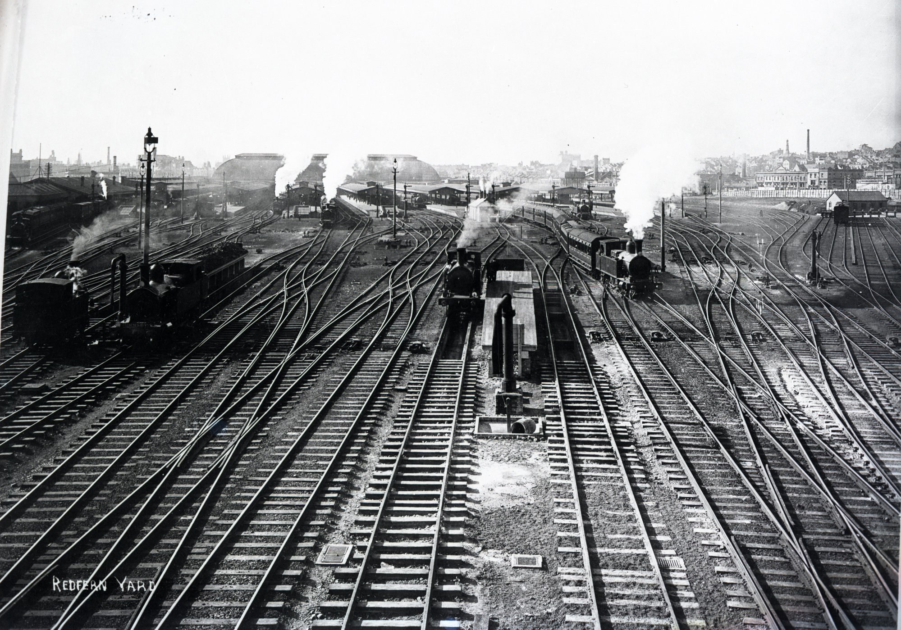

Background

I am a young railway enthusiest that is extremely interested in the preservation of railway heritage all around the world, most importantly here in NSW. I am a regular visitor to the NSW Rail Museum and the Eveleigh Workshop, and I have been to the Zig Zag Railway and hope to ride the Picnic Train soon.
I take great joy in taking in all the beutifully preserved steam locos and unique heritage experiences created by the willing volenteeers of these preservation societies. I beleive that the preservation of heritage is important for future generations, as it is a way to learn about the past and how we have come to where we are today.
It is vitially imporant to preserve some major historic items such as the famous 3801 steam loco, named a "Legend of Steam" and other locos such as the Beyer Garratt 6029, largest operating steam loco in the Southern Hemisphere. Heritage railways can be a significant tourist attraction, drawing visitors from around the world. Preserving these railways and offering mainline tours and museum exhibits can generate economic benefits for surrounding communities.
History of the NSWGR
The New South Wales Government Railways (NSWGR) was established in 1855 as the first railway system in Australia, and it played a critical role in the development of the state's economy and transport infrastructure.
The first railway line was constructed between Sydney and Parramatta, which opened in 1855. The railway line was extended over the years to serve other parts of New South Wales, and by the 1880s, it had become an extensive network that connected the major towns and cities.
The NSWGR played a vital role in the transportation of goods and people, particularly in the early days when other forms of transport were limited. The railways helped open up new regions and fostered the growth of agriculture and mining industries in the state. The railway also provided a critical link between Sydney and other parts of Australia.
References
Many thanks to the following websites for providing information and images for this website:
- https://www.visitwollondilly.com.au/experience/history-and-heritage/nsw-rail-museum/
- https://en.wikipedia.org/wiki/Eveleigh_Railway_Workshops
- https://www.flickr.com/photos/garratt3/with/8412992761/
- https://www.picnictrain.com.au/trips
- https://livinghistories.newcastle.edu.au/nodes/view/88508
- https://www.nswrailmuseum.com.au/about
- https://www.facebook.com/NSWRailMuseum/photos/a.227893310605284/4332238210170753/?type=3
- http://ieslnsw.org/industry-visit-2018/
- https://www.youtube.com/watch?v=3aLvomMFB8E
- https://eveleighstories.com.au/stories/power-and-movement/roaring-giant
- https://www.southeveleigh.com/southeveleighlife/2020/04/22/02/37/discoveruniquesoutheveleigh
- https://en.wikipedia.org/wiki/South_Eveleigh
- https://www.youtube.com/watch?v=j34y-rbr8S8
- https://en.wikipedia.org/wiki/Lithgow_Zig_Zag
- https://zigzagrailway.com.au/about-us/
- https://www.lithgowmercury.com.au/story/7250751/steam-locomotive-returns-to-zig-zag-railway-for-first-time-in-nine-years/
- https://www.youtube.com/watch?v=JclVNReTsbI
- https://www.steamfest.com.au/trains/power/steam/
- https://www.mymaitland.com.au/event/gloucester-and-scone-picnic-trains/
- https://www.youtube.com/watch?v=VzIOkLmU9Tc
- https://leafletjs.com/
- https://www.openstreetmap.org
- https://www.mapbox.com/
And of course many thanks to Open AI and Chat GPT for providing a lot of this insightful information and the train animation below.